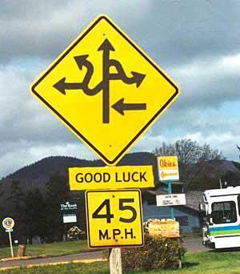

Tony Hawk
 De: La Frikipedia, la enciclopedia extremadamente seria.
De: La Frikipedia, la enciclopedia extremadamente seria.
 Se cree que este es el camino que patina tony para hallar su casa
Anthony Frank (12 de mayo 1968- 12 de mayo 2010) también conocido como Antonio Franco, Tony Hawk, y aquí como Toño Halcón es el patinador mas habilidoso e invencible (almenos hasta su muerte en el 2010) de San Diego California. Vive en California... ¿ya te lo dije?. Es considerado por la revista TIME como el gilipollas del año mejor Skater en Half Pipe y en Ollies.
Biología
Y vaya que era hiperactivo.
Era un niño que sufría por el hecho que sus padres no le dejaban consumir azúcar pues ellos decían que era hiperactivo, y por consecuente no tuvieron otra opción que enviarlo a un manicomio Guatemalteco, ahí, 2 amigos que sufrían el mismo mal que él, le presentaron un artefacto que cambiaría su vida por una aun más dolorosa... la patineta.
Al ser rehabilitado en un lapso de... 1 semana, volvió con la patineta con el fín de romperle la cabeza a su padre, pero finálmente se dió cuenta que la patineta era para montarse y no un arma para desquitarse (así como lo hace en American Wasteland y Underground al caerse), su padre le pidió perdón y le dijo que recuperarían el tiempo perdido (1 semana) llevandolo a un Skate Park, en California. Más tarde a Toño y a su padre les llego una pequeña descarga eléctrica al cerebro tras haber AA, El Ku Klux Klan la American Skateboard Association.
Increíblemente, el pediatra de Toño Halcón les hizo una llamada en la cual debían llevar a Toño a su Edifício de mala vida. Al llegar, el pediatra encendió la base de las radiografías mostrando que Toño había nacido con una deformidad peculiar: Tenía los pies unidos, en forma de tabla y con unas ruedas hechas de hueso. Por algo era que sabía patinar tan mal bien y a los 12 años ya contaba con Chulos promotores. A los 17 ya era considerado como el mejor gilipollas skater del barrio.
Trucos
Punto culminante del McTwist.
- El McTwist: Consiste en una maraña de trucos, básicamente es dar una vuelta en el aire de 540º mientras haces un mute y tomas el control remoto con la otra mano. Fue inventado por Mike McGil
ipollas. Un dato curioso es que hay un truco llamado el "Gay Twist" probablemente inventado por él en su adolescencia
- 900: Truco
salído del carajo hecho por él mismisimo Toño en los pr0nGames, consiste en (¡a que no adivinas!...) dar un giro de 900º, considerado como el truco más estúpido peligroso pero impresionante en la historia del panty-naje, Este truco fue incluso publicado en los periódicos y en la television (noticieros, programas nocturnos, Productos por T.V. y animados) excepto en el canal de ESPN y Fox Sports
- 720: También fue él el primero en hacerlo (solo sabe dar vueltas), ¿tengo que explicarlo? ¿de verdad retienes tan poca información? bueno, lo haré de nuevo IP anónima, consiste en dar una vuelta de 720º.
- Benihana: Probablemente este es un truco dedicado a una ex-novia. Inventado por Lester Kasai, consiste en un Tail-Grab con un solo pié y darle vueltas a la patineta mientras rezas un padre nuestro esperando no quedar cuadrapléjico.
- Madonna: Inventado por el guajolote, consiste en escuchar "Like a Virgin" para inspirarte y hacer cualquier estupidéz aleatoria.
Cosas que hace Toño Halcón
75 pies de altura, brecha de 20 pies, velocidad máxima de 93 km/h, probabilidades de fractura compuesta en 80%, el sueño de todo patinador.
- Patinar
- Comer
- Dormir
- Cagar
- Romper tablas
- Evadir impuestos
- Robar el corazón de muchos patinadores
- Enseñarle a patinar a su hijo
- Enseñarle a hacer un torniquete a su hijo
- Empujar a su hijo en la cima de la Burnquist Ramp de 75 pies de altura
- Caerse 3 veces al día
- Decir "es cool sabes" a cada afirmación que hagas
- Ser uno de los tipos más aburridos en la historia
- Chocar uno de sus 5 Viper GTS contra un poste al día
- Saltar desde un techo
- Dar una vuelta a la rampa circular vestido de mono
Videojuegos
Una víctima de Tony. Grácias a la rapidez de las autoridades, fue arrestado por agresión
Actualmente él ha sacado 3450 juegos... de los cuales solo 10 no prohibieron porque cuando tony fallaba un truco y apretabas B repetidamente rompia su patineta y acto seguido se pajeaba para volverla a pegar.
- "Toño Halcón: Por Skato"
- "Toño Halcón: Pro skato2""
- "Toño Halcón: Pro skato3"
- "Toño Halcón: Pro skato4"
- "Toño Halcón:
Six Feet Underground"
- "Toño Halcón:
Six Feet Underground 2"
- "Toño Halcon: American Wasteland"
- "Toño Halcón: Downhill Jam"
- "Toño Halcón: Projecto 8" ( en este reprobo por no entregarlo a tiempo)
De entre los juegos que nunca salieron esta:
Este es el control para el juego Toño Halcón: American Wasteland (tienes que agitar el control y apretar todos los botones para subirte a la patineta.
- "Tony Hawk vs Smackdown 2009"
- "Gears of Hawk"
- "Call of Tony"
- "Tony May Cry"
- "Grand Theft Skater"
- "Halo: Tony Evolved"
- "Super Tony Bros."
- "Tony hawk reloaded"
- "Tony Hawk: enter the matrix"
- "Lara Hawk: Tomb Skater"
- "Burnout 3: Tony Takedown"
- "The king of Skatos 2002 magic plus remix 5 reloaded"
- "Tony Fantasy MMXCVII"
- "Resident Evil: Nemehawk"
- "Shadow of Hawkossus"
- "Pajas of Warcraft"
- "Super Smash Hawks: Brown"
- "God of Hawk"
- "Silent Hawk"
¿Sabias que...

Numero de veces que se ha caído de la patineta
- Toño vive en California?
- Drake Parker se robó el Dodge Viper de Toño!!!???
- Toño Halcón le estrello la patineta en los huevos????!!!!!
- Por eso Drake canta así?????????????!!!!!!!!!!!!!
Autor(es):
- Mierdashi
- Veni Vidi Vici
- Kevrochi
- Punksnotdead
- Michell01
- Toneh
- Gñapero Solitario
- JosuE
- Putosemos
- Azzarielvengador
Frikipedia 2005-2016, Licencia
GFDL 1.2 - Extraído por FrikiLeaks